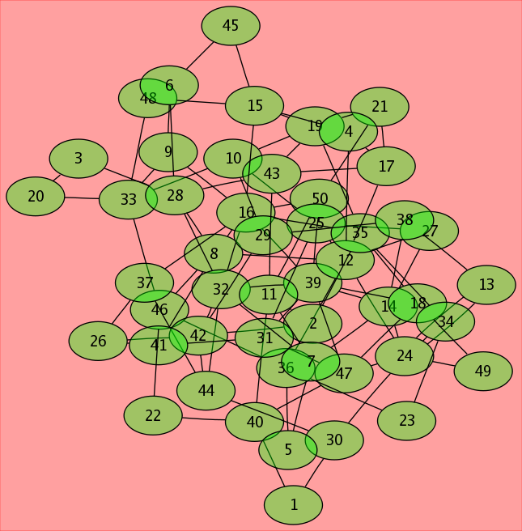

| Partially Transparent Colors |
|---|
This example illustrates the use of partially transparent colors for node fill and graph background.
|
|

Click on the picture to view the dot file |
[ Back to Graphviz: Home Page | Gallery ]
Copyright © 1996 AT&T. All rights reserved.